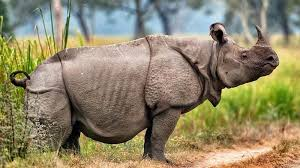
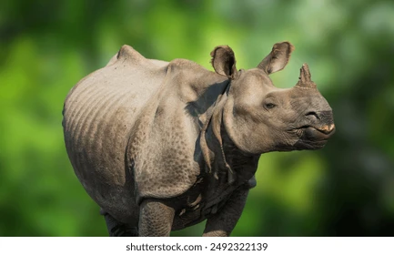
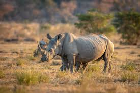

El rinoceronte de Java (Rhinoceros sondaicus) es una de las especies de mamíferos más raras y en mayor peligro crítico del mundo. Solo se encuentra en el Parque Nacional Ujung Kulon, en la isla de Java, Indonesia. Se distingue por tener un solo cuerno y su piel con pliegues que parecen armadura. La población actual es extremadamente pequeña (menos de 80 individuos) y se enfrenta a amenazas como la caza furtiva por su cuerno y el riesgo de enfermedades o desastres naturales debido a su única ubicación. Su conservación es un esfuerzo crítico a nivel global.


